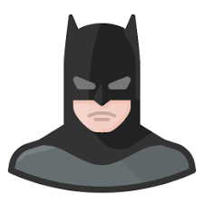

<ion-header translucent>
  <!-- <ion-toolbar color="primary">

    <ion-title>
      Todo
    </ion-title>
  </ion-toolbar> -->
  <ion-toolbar>
    <ion-buttons slot="start">
    <ion-menu-button></ion-menu-button>
    </ion-buttons>
  <ion-title>
    Home
  </ion-title>
</ion-toolbar>

</ion-header>

<ion-content color="primary" fullscreen>
  <ion-header collapse="condense">
    <ion-toolbar>
      <ion-title size="large">Todo</ion-title>
    </ion-toolbar>
  </ion-header>

  <ion-button (click)="createTodo()" color="secondary" expand="block">
    Add todo
    <ion-icon name="add-circle" slot="start"></ion-icon>
  </ion-button>

  <ion-list lines="full" style="background: var(--ion-color-primary);">

    <ion-item color="primary" *ngFor="let todo of todos">
      <!-- <ion-icon [name]="getIcon(todo)" slot="start"></ion-icon> -->

      <!-- <ion-grid>
        <ion-row>
          <ion-col>
            {{todo.title}}
          </ion-col>
          <ion-col>
            {{todo.note}}
          </ion-col>
          <ion-col>
            <span><ion-badge color="success"><ion-icon name="bookmarks-outline"></ion-icon></ion-badge><ion-badge color="warning">{{todo.tags}}</ion-badge></span>
          </ion-col>
        </ion-row>
      </ion-grid> -->

      <ion-card>
        <ion-card-header>
          <ion-icon name="aperture-outline"></ion-icon>
          {{todo.title}}
        </ion-card-header>
        <ion-card-content>
          {{todo.note}}
        </ion-card-content>
      </ion-card>

      <ion-card>
        <ion-card-content>
          <ion-grid>
            <ion-row class="ion-align-items-center ion-justify-content-between">
              <ion-col>
                
              </ion-col>
              <ion-col size="auto">
                <h1 class="userName">Chris Griffith</h1>
                <p class="gameStats">
                  <span class="wins">6W</span><span class="draws">3D</span><span class="losses">2L</span>
                </p>
              </ion-col>
              <ion-col>
                <ion-button size="small" class="ion-float-right ion-text-uppercase">Register Result</ion-button>
              </ion-col>
            </ion-row>
          </ion-grid>
        </ion-card-content>
      </ion-card>

      
    </ion-item>
  </ion-list>


  <!-- fab placed to the bottom start -->
  <ion-fab vertical="bottom" horizontal="end" slot="fixed" routerLink="/add-note">
    <ion-fab-button color="tertiary">
      <ion-icon name="add"></ion-icon>
    </ion-fab-button>
  </ion-fab>

</ion-content>

